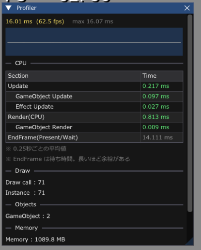

LV5 最適化 ／ 5-01
難易度 ／ 前提 2-24
LV4 の判断基準は「読みやすさ」と「変更しやすさ」でした。
LV5 の判断基準は「速さ」です。
そして、この2つはしばしば対立します。 どちらが正しいという話ではありません。 場面ごとに選べるようになるのが目標です。
人間の推測は、驚くほど当たりません。
| よくある推測 | 実際 |
|---|---|
| ループが多いから、そこが重い | ループの中身が軽ければ、何ともない |
| 当たり判定が重い | たいてい描画のほうが重い |
sqrt が重い |
いまのCPUでは、たいした問題ではない |
| 関数呼び出しが重い | Release ではインライン化されて消える |
| ここが原因に違いない | まったく別の場所だった |
F1 → Profiler パネルです。

| 表示 | 意味 | 目安 |
|---|---|---|
| xx.xx ms (xx.x fps) | 1フレームにかかった時間 | 16.6ms 以内で 60FPS |
| max xx.xx ms | 履歴の中でいちばん遅かったフレーム | 平均より、こちらが大事 |
| グラフ | フレーム時間の推移 | とがっているところが引っかかり |
| Section / Time | K2_PROFILE_SCOPE の計測結果 |
5-02 |
| EndFrame(Present/Wait) | 60FPSに合わせるための「待ち時間」 | 長いほど余裕がある |
| Draw call | 「描け」と命令した回数 | 5-08 |
| Instance | 実際に描かれたモデルの数 | インスタンシングを使うと Draw call より大きくなる |
| GameObject | 生きているゲームオブジェクトの数 | 増え続けていたら DeleteGO 忘れ |
| Memory | プロセスのメモリ使用量 | 5-14 |
| VRAM | ビデオメモリ使用量 | 予算を超えると急に重くなる |
パネルの項目にマウスを乗せると、説明が出ます。 覚えなくても、その場で読めます。
EndFrame(Present/Wait) は、
「60FPSに間に合ったので、次のフレームまで何もせず待っている時間」です。
| EndFrame の値 | 状態 |
|---|---|
| 14 ms（フレームの大半） | 非常に余裕がある。最適化は不要 |
| 8 ms | 余裕あり |
| 2 ms | ぎりぎり。そろそろ危ない |
| 0 ms | 間に合っていない。FPSが落ちている |
| 目標FPS | 1フレームの予算 |
|---|---|
| 60 FPS | 16.6 ms |
| 30 FPS | 33.3 ms |
| 120 FPS | 8.3 ms |
「1フレームに使える時間の予算」と考えてください。 16.6ms のうち、
…といった配分になります。1ms は、決して小さくありません。 全体の6%です。
最初に切り分けるべきことです。 対策がまったく違います。
| 試すこと | 速くなったら |
|---|---|
| ウィンドウを小さくする | GPU が原因（ピクセルの処理） |
| オブジェクトを半分に減らす | 両方ありうる |
| F1 でポストエフェクトを全部切る | GPU が原因 |
| 描画だけ止めて、更新は動かす | 切り分けとして、いちばん確実 |
ウィンドウサイズを変えて速くなるなら、 CPU側をいくら最適化しても無駄です。 3-15 の PIX で GPU 側を見てください。
| 順 | やること | 効き方 |
|---|---|---|
| 1 | そもそもやらない（画面外の処理を飛ばす、など） | いちばん効く |
| 2 | アルゴリズムを変える（O(n²) → O(n)） | 桁で効く |
| 3 | データの並べ方を変える | 5-06。数倍 |
| 4 | 並列化する | 5-12。コア数ぶん |
| 5 | 細かい書き方を変える | 数%。最後でよい |
i++ を ++i にする、
sqrt を避ける、といったことです。F1 → Profiler を開いて、いまの Frame / Max / FPS を記録する。
ウィンドウを小さくして、速くなるか試す。自分のゲームは CPU と GPU、どちらで詰まっているか。
やり方
判定
| 結果 | 意味 | 次に読む章 |
|---|---|---|
| 18ms → 6ms（大きく速くなった） | GPU律速。ピクセルの処理が重い | 5-08、 3-15 |
| 18ms → 17ms（ほぼ変わらない） | CPU律速。更新処理が重い | LV5 のほぼ全部 |
| 18ms → 13ms（少し速い） | 両方。まず大きいほうから | 両方 |
さらに確実な切り分け ― 描画だけ止める
// Game.cpp
#ifdef _DEBUG
if (g_pad[0]->IsPress(enButtonBack)) {
return; // ★ 描画をまるごと飛ばす
}
#endif
m_gameObjectManager->ExecuteRender(rc);これを押している間だけ速くなるなら、描画（GPUまたは描画準備）が原因です。 押しても変わらないなら、更新処理（CPU）が原因です。
グラフがとがっているところを探す。ゲーム中のどの操作をしたときに、フレーム時間が跳ねるか。本文には答えがありません。
探し方
グラフを見ながら、いろいろ操作してみてください。 とがった瞬間に何をしていたかをメモします。
よくある「とがる」場所
| とがるタイミング | 原因 | 効く章 |
|---|---|---|
| シーン切り替えの瞬間 | テクスチャ・モデルの読み込み | 先に読んでおく（プリロード） |
| ボスが出てくる瞬間 | 大量の NewGO と初期化 |
4-06 |
| 爆発エフェクトが出た瞬間 | .efk の読み込み、大量のパーティクル |
4-06 |
| 弾幕が濃くなったとき | 当たり判定の O(n²) | 5-06 |
| 一定間隔で定期的に | メモリの断片化、GCのような処理 | 5-07 |
| 初回だけ | シェーダのコンパイル、ファイルキャッシュ | 2回目以降が本当の値 |
記録の例
== スパイクの記録 ==
1. ボス出現時 : 16ms → 89ms ★最大
→ ボスのモデルとアニメを、そこで初めて読んでいる
2. 爆発が5個同時 : 16ms → 34ms
→ Explosion を毎回 NewGO している
3. ステージ2に切替 : 16ms → 210ms
→ シーン切り替えで全部読み直し。暗転でごまかしている
4. 弾200発超 : 16ms → 22ms
→ 当たり判定が弾×敵の総当たり